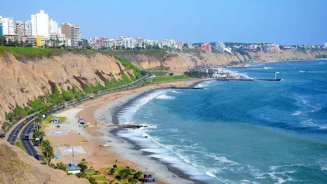
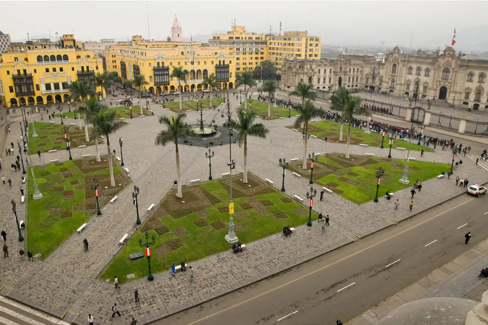

Coastal scenery
Lima combines cliffs, ocean views, green parks, and urban neighborhoods in one destination.

Explore Peru's capital
Explore coastal views, historic landmarks, local culture, and one of the most celebrated food scenes in South America.
Lima combines cliffs, ocean views, green parks, and urban neighborhoods in one destination.
The city includes colonial architecture, major public squares, and important archaeological sites.
From ceviche to street snacks and modern restaurants, Lima is one of the strongest food destinations in the region.
Visit the coastal district of Miraflores, the historic center around Plaza Mayor, the archaeological site of Huaca Pucllana, and modern attractions like Larcomar.
See all featured places
One of the most iconic parts of Lima for first-time visitors.